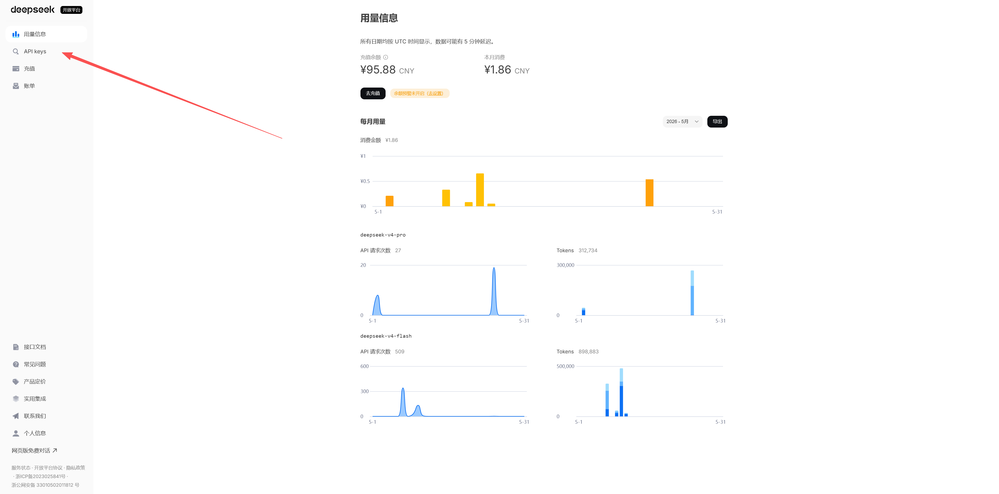
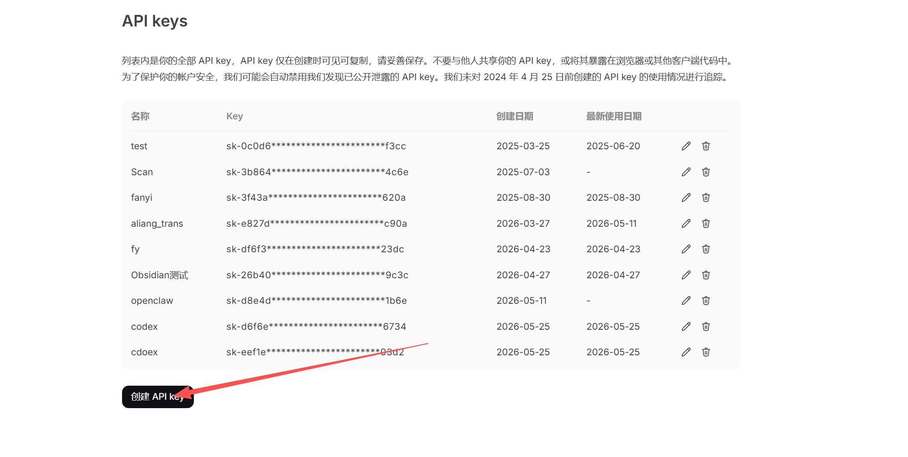
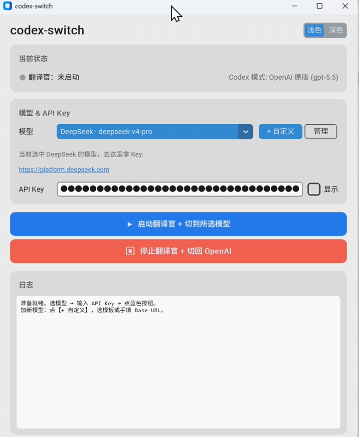

Codex 官方不建议通过直接改配置文件来切换第三方模型。这里整理 codex-switch 的接入流程，用 DeepSeek 作为示例。
Codex 接入国产模型
这一节来自飞书文档《codex接入国产模型》的整理稿。核心思路是使用 codex-switch 工具在启动 Codex 前切换模型服务，例如切到 DeepSeek，再在需要时一键切回官方 GPT 模型。
为什么需要 codex-switch
Codex 和 Claude Code 的模型切换方式不完全一样。Claude Code 常见做法是改配置或走代理，而这篇流程强调：Codex 不适合直接通过修改配置文件来切换模型。为了降低操作门槛，可以用专门的 codex-switch 工具完成模型服务切换。
风险说明：
codex-switch 是第三方工具，不是 OpenAI 官方组件。下载、授权和填写 API Key 前，要确认来源、版本和权限边界。不要把生产密钥或高权限 Key 填入不可信工具。准备工作
- 已经安装并能正常打开 Codex。
- 准备一个要接入的国产模型平台账号，例如 DeepSeek。
- 确认你能创建 API Key，并知道该平台的计费、额度和模型名称。
- 下载 codex-switch Releases 中与你电脑系统匹配的安装包。
以 DeepSeek 为例的接入步骤
- 打开
codex-switch，在模型列表中选择 DeepSeek。 - 点击工具里的 DeepSeek 官网入口，进入 DeepSeek 开放平台。
- 登录 DeepSeek 后，进入
API keys页面。 - 创建新的 API Key。
- 复制 API Key，粘贴到
codex-switch对应输入框。 - 点击蓝色切换按钮，完成模型切换。
- 重启 Codex，让新的模型配置生效。
- 在 Codex 中发送一条简单消息，确认当前模型已经变为 DeepSeek 并能正常回复。



切回官方 GPT 模型
如果要恢复 OpenAI 官方模型，在 codex-switch 中点击红色按钮即可切回。切换后同样需要重启 Codex，否则当前进程可能仍在使用旧配置。
记住：每次切换模型后都重启 Codex，这是这篇流程里最容易漏掉的一步。
支持自定义模型
原文提到，codex-switch 当前支持主流国产模型，也可以配置自定义模型。自定义时要准备模型服务的 API Base、API Key、模型名和必要的兼容参数。正式录教程时，可以补一张「模型申请链接表」，把 DeepSeek、通义、智谱、月之暗面、豆包等平台的申请入口统一列出。
来源
- 飞书文档：codex接入国产模型
- 工具下载：codex-switch Releases